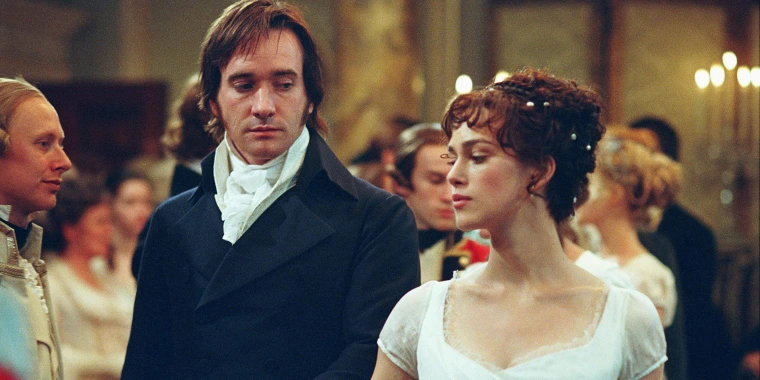

Šis keturis oskarus
pelnęs filmas puikiai vaizduoja provincijos panelių gyvenimą, kurį užpildo pasivaikščiojimai po žalius laukus ir klonius, tingus fortepijono klavišų barbenimas, garsus kikenimas ir vienintelė svajonė kur rasti tinkamą Jį.
Kad herojų gyvenime esama puikybės bei prietarų, iliustruoja pastoraliniai vaizdeliai, kurie parodo kančių priežastį klasinius skirtumus tarp mylinčių širdžių savininkų.
Veikėjų sąrašas: Keira Knightley kaip Elizabeth Bennet : Keira Knightley vaidina pagrindinę heroję Elizabeth Bennet protingą, nepriklausomą ir principingą moterį, kuri siekia tikros meilės socialinėje atmosferoje, kupinoje konvencijų XIX amžiaus Anglijoje. Jo pasirodymas šiame filme sulaukė didelio pagyrų. Matthew_Macfadyen kaip p. Fitzwilliam Darcy : Matthew Macfadyenas atlieka svarbų vaidmenį p. Darsis, arogantiškas ir paslaptingas vyras, kuris vėliau patiria charakterio transformaciją, kai įsimyli Elizabeth Bennet. Rosamund Pike kaip Jane Bennet : Rosamund Pike vaidina Jane Bennet, Elžbietos vyresniąją seserį, kuri yra padorumo ir gerumo pavyzdys. Ji yra švelnus ir mylintis personažas. Donaldas Sutherlandas kaip p. Bennet : Donaldas Sutherlandas vaidina p. Bennet, Bennet šeimos tėvas, yra žinomas dėl savo sumanumo ir polinkio vengti konfliktų. Brenda Blethyn kaip Mrs. Bennet : Brenda Blethyn yra ponia. Bennet, įnirtinga ir dažnai kvaila Bennet šeimos motina. Ji labai tikėjosi, kad visos dukros ištekės už turtingų vyrų. Judi Dench kaip ledi Catherine de Bourgh : Judi Dench vaidina ledi Catherine de Bourgh, arogantišką aristokratę moterį, kuri trokšta p. Darcy kaip žento. Jos vaidmuo istorijai suteikia papildomos dramos. Simonas Woodsas kaip p. Charlesas Bingley : Simonas Woodsas vaidina Mr. Bingley, turtingas vyras, kuris atvyksta į kaimą ir tampa moterų, ypač Džeinės Benet, susidomėjimo šaltiniu. Rupertas draugas kaip p. Wickhamas : Ruperto draugas yra p. Wickhamas, karininkas, žavinga išvaizda pavergiantis Elžbietos širdį, nors ir turintis tamsią paslaptį. Aktoriai šiame filme surengė nepaprastus pasirodymus ir sugebėjo puikiai atgaivinti Jane Austen klasikinio romano veikėjus.

„Puikybė ir prietarai“ taip pat yra apie tai, apie ką atsižvelgiama visuose didžiuosiuose romanuose - savęs ieškojimą. Bendraudami ir kritikuodami vienas kitą, Darcy ir Elizabeth atpažįsta savo klaidas ir stengiasi jas ištaisyti.

Veiksmas vyksta devyniolikto amžiaus pradžios Anglijoje. Pasakojama apie Benetų šeimą, kuriai teko laimė turėti penkias visiškai skirtingas dukteris: gražuolę drovią Džeinę, aštrialiežuvę Elizabetą, apie moralę pliaukšiančią Kitę, lengvai paveikiamą Merę ir vėjavaikę Lidiją. Kadangi šeimoje tik mergaitės, po tėvo mirties jų dvaras pagal vyrišką liniją atiteks pusbroliui Kolinsui, todėl didžiausios ponios Benet rūpestis ir troškimas yra ištekinti dukteris taip užtikrinant ramią jų ateitį. Ir čia prasideda visa istorija kai nelabai kokio proto ir manierų mama Benet nusprendžia, kad viena jos dukterų tiesiog privalo ištekėti už turtingo jaunikaičio pono Binglio, kuris išsinuomoja dvarą netoliese. Motinos džiaugsmui, ponas Binglis susižavi vyriausiąja dukra Džeine, tačiau jo seserys ir geriausias draugas ponas Darsis nešokinėja iš laimės dėl prastų jos šeimynykščių manierų. Elizabeta labai myli savo seserį Džeinę ir linki jai visos įmanomos laimės, tačiau ji aiškiai mato seserų ir tėvų netinkamą ir gėdingą elgesį. Ji pyksta ant pono Darsio dėl jo išpuikimo ir paniekinamo elgesio, ir kiekvienas jų susitikimas tampa maža dvikova, kuri didina Darsio susidomėjimą. Taigi, kai Džeinė ir Binglis įsimyli iš pirmo žvilgsnio, Elizabetos pirmasis įspūdis apie Darsį sukelia tik antipatiją.
Oskarą pelnęs, kaip "Geriausia muzika" Marianelli: Dawn nuostabus garso takelis > filmui suteikia nepakartojamo įspūdžio ir tinkamos emocijos.Kadras iš filmo:

© by 2024
2024